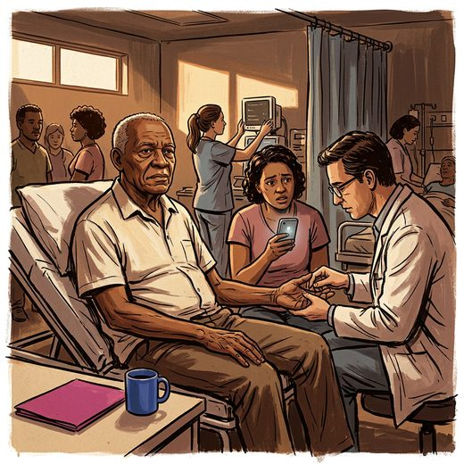

Consulta rápida à beira do leito
Condutas, doses e interações.
Referências da aula · 10
- Prabhakaran S, Gonzalez NR, Zachrison KS, et al. 2026 Guideline for the Early Management of Patients With Acute Ischemic Stroke: A Guideline From the American Heart Association/American Stroke Association. Stroke. 2026 Jan 26. doi:10.1161/STR.0000000000000513.DOI
- IST-3 Collaborative Group; Sandercock P, Wardlaw JM, Lindley RI, et al. The benefits and harms of intravenous thrombolysis with recombinant tissue plasminogen activator within 6 h of acute ischaemic stroke (the third international stroke trial [IST-3]): a randomised controlled trial. Lancet. 2012;379(9834):2352-63. PMID 22632908. doi:10.1016/S0140-6736(12)60768-5.PubMedDOI
- Winkelmeier L, Kniep H, Faizy T, et al; German Stroke Registry–Endovascular Treatment (GSR-ET). Age and functional outcomes in patients with large ischemic stroke receiving endovascular thrombectomy. JAMA Netw Open. 2024;7(8):e2426007. PMID 39133490. doi:10.1001/jamanetworkopen.2024.26007.PubMedDOI
- Tsivgoulis G, Campbell BC. Endovascular thrombectomy for large core ischemic stroke: age matters. JAMA Netw Open. 2024;7(8):e2425958. PMID 39133492. doi:10.1001/jamanetworkopen.2024.25958.PubMedDOI
- Brott T, Adams HP Jr, Olinger CP, et al. Measurements of acute cerebral infarction: a clinical examination scale. Stroke. 1989;20(7):864-70. PMID 2749846. doi:10.1161/01.str.20.7.864.PubMedDOI
- Sarraj A, Hassan AE, Abraham MG, et al. Trial of endovascular thrombectomy for large ischemic strokes (SELECT2). N Engl J Med. 2023;388(14):1259-71. PMID 36762865. doi:10.1056/NEJMoa2214403.PubMedDOI
- Huo X, Ma G, Tong X, et al. Trial of endovascular therapy for acute ischemic stroke with large infarct (ANGEL-ASPECT). N Engl J Med. 2023;388(14):1272-83. PMID 36762852. doi:10.1056/NEJMoa2213379.PubMedDOI
- Yoshimura S, Sakai N, Yamagami H, et al. Endovascular therapy for acute stroke with a large ischemic region (RESCUE-Japan LIMIT). N Engl J Med. 2022;386(14):1303-13. PMID 35138767. doi:10.1056/NEJMoa2118191.PubMedDOI
- Nogueira RG, Jadhav AP, Haussen DC, et al. Thrombectomy 6 to 24 hours after stroke with a mismatch between deficit and infarct (DAWN). N Engl J Med. 2018;378(1):11-21. PMID 29129157. doi:10.1056/NEJMoa1706442.PubMedDOI
- Albers GW, Marks MP, Kemp S, et al. Thrombectomy for stroke at 6 to 16 hours with selection by perfusion imaging (DEFUSE 3). N Engl J Med. 2018;378(8):708-18. PMID 29364767. doi:10.1056/NEJMoa1713973.PubMedDOI
Documentos oficiais
Leis e publicações do Ministério da Saúde sobre o cuidado da pessoa idosa, de acesso livre.
Abrir os documentos